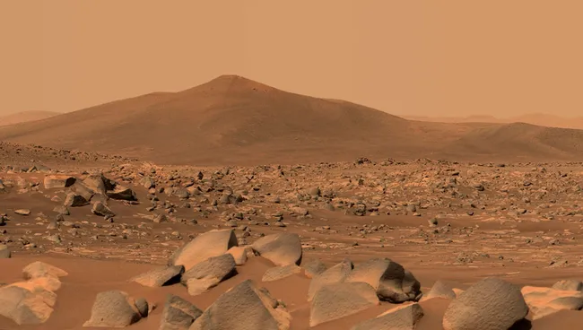

Imagens de Marte
Confira algumas imagens impressionantes tiradas pelos rovers da NASA diretamente de Marte.

Imagem de Marte 1

Imagem de Marte 2
Com o passar dos anos, enviamos sondas para descobrir outros planetas e monitorar asteroides, além de procurar por vida fora da Terra. Os dados da NASA nos ajudam a entender melhor o nosso sistema solar e o universo.
API NEO (Near Earth Objects): Permite explorar asteroides próximos da Terra, fornecendo dados como nome, diâmetro e distância.
Explorar DadosConfira algumas imagens impressionantes tiradas pelos rovers da NASA diretamente de Marte.
Imagem de Marte 1
Imagem de Marte 2